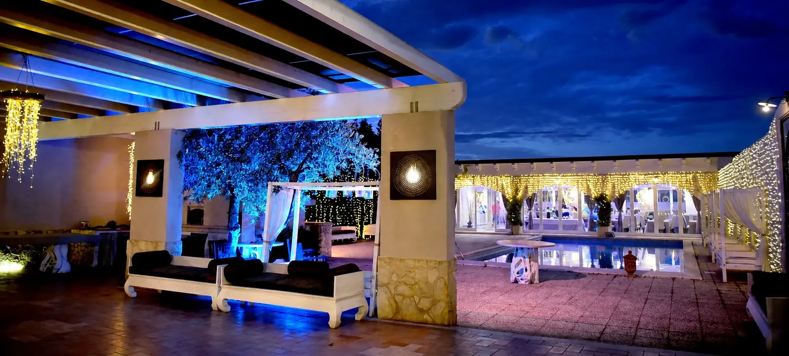
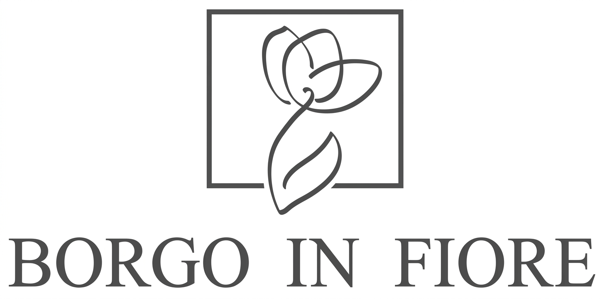
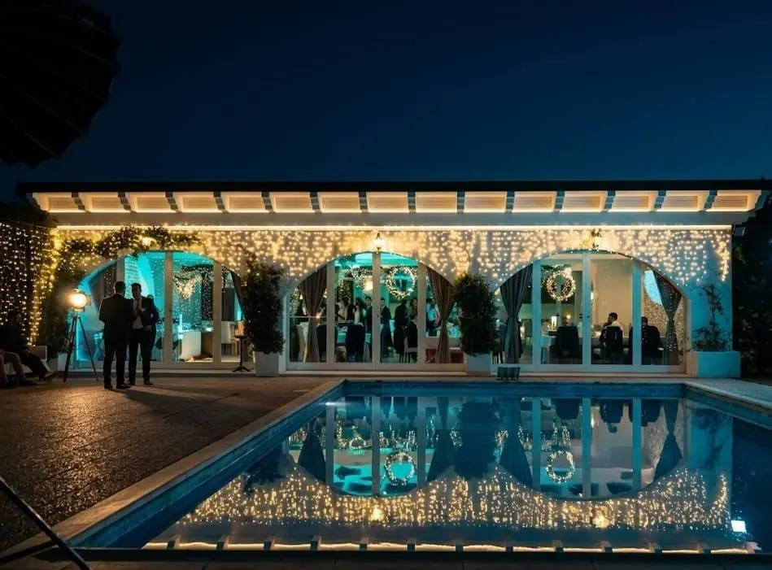
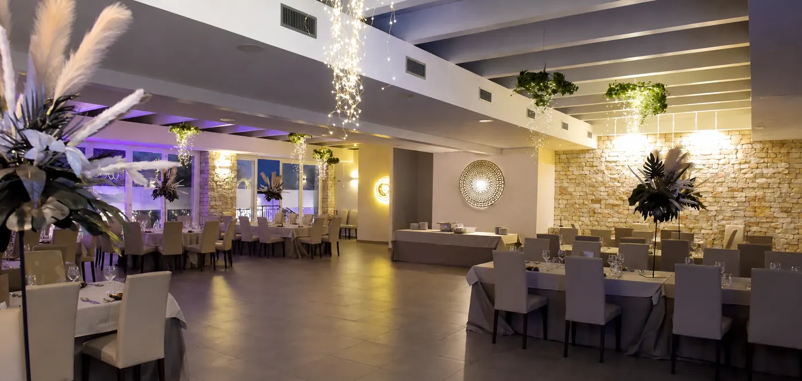
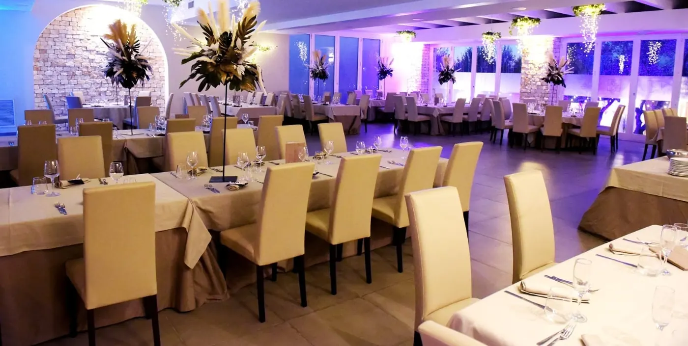
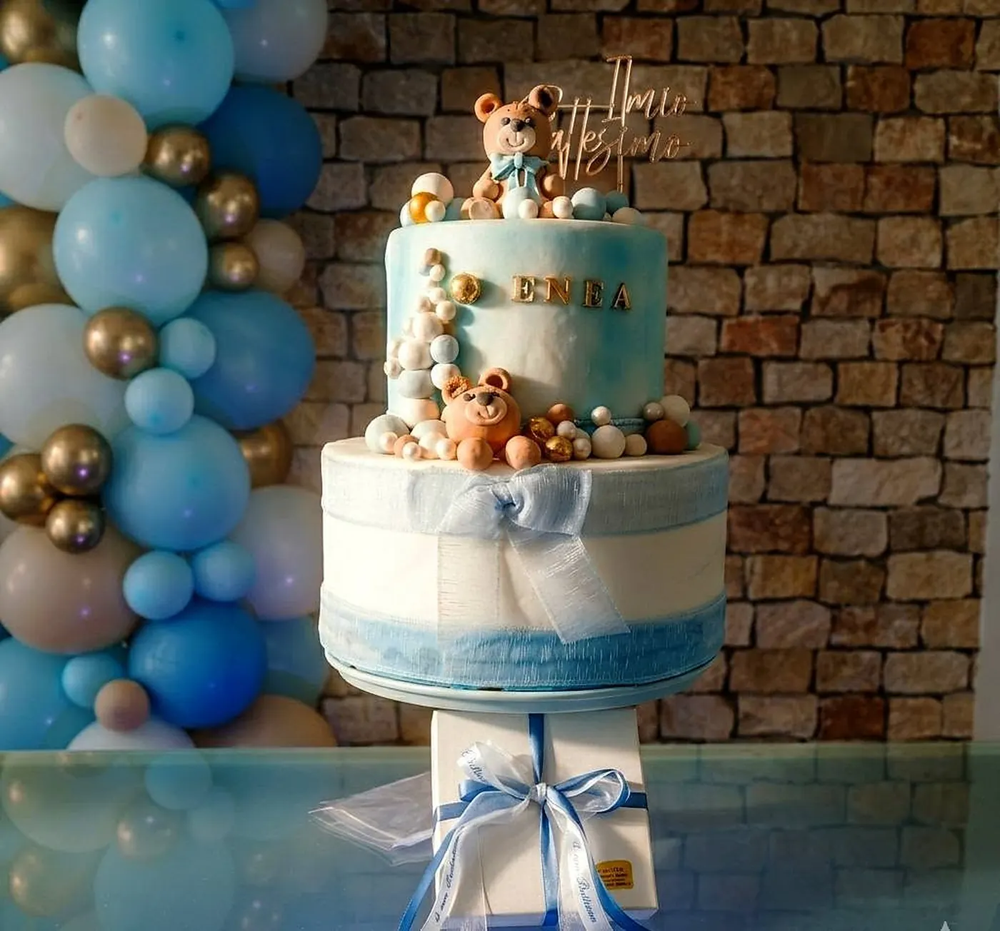
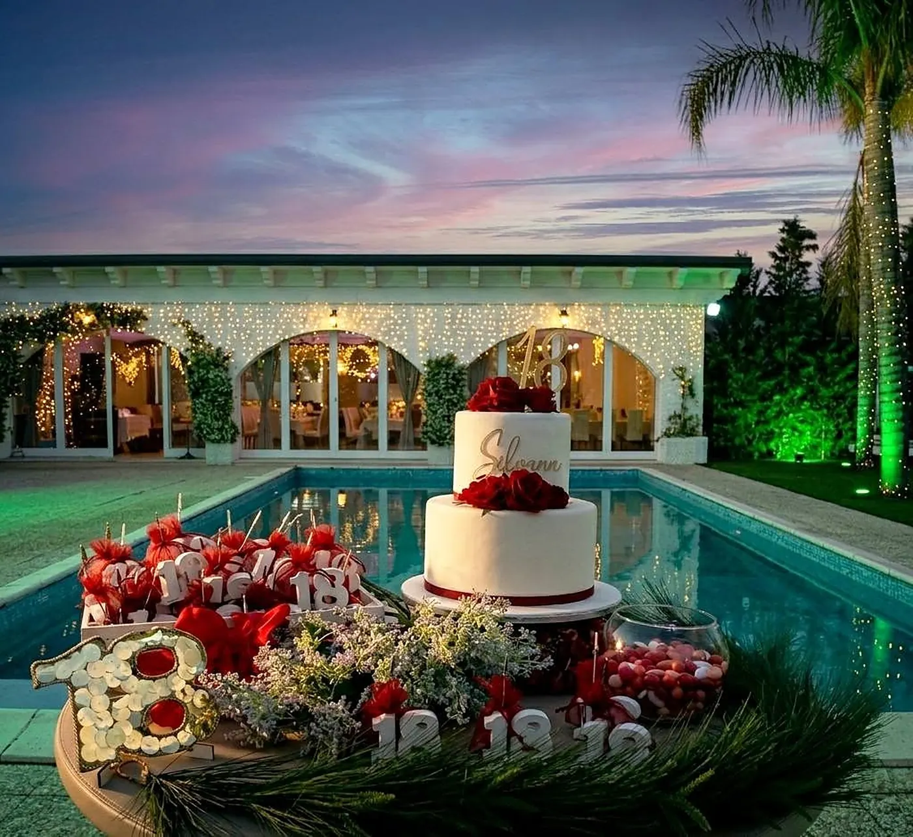
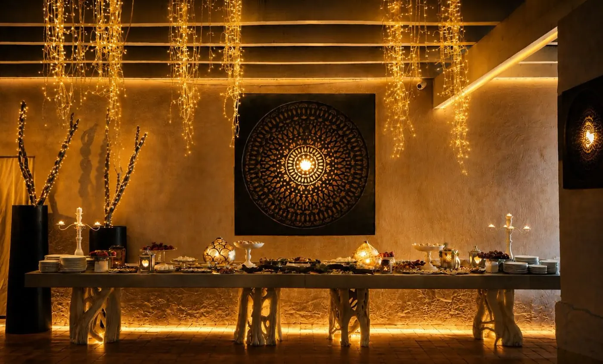
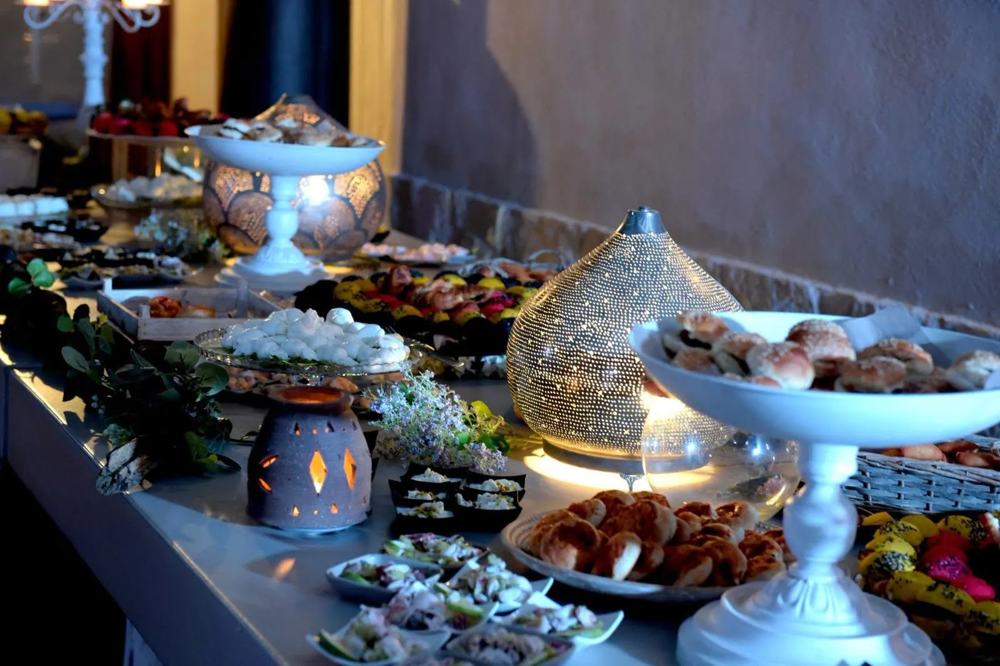

Corte Salentina

La corte all'aperto, per l'aperitivo e per i momenti da vivere insieme.
Scopri di più →
Tre ambienti nella stessa tenuta, per vivere aperitivo, cena e festa senza lasciare il posto. Da Borgo in Fiore si organizza tutto su prenotazione.
Richiedi la tua festa Chiama 339 707 1801Dalla corte alla piscina fino alla sala, gli ospiti si spostano da uno spazio all'altro senza lasciare il Borgo.

La corte all'aperto, per l'aperitivo e per i momenti da vivere insieme.
Scopri di più →
Uno spazio all'aperto accanto alla piscina, per cene e feste in compagnia.
Scopri di più →
L'ambiente interno, per il ricevimento e la festa.
Scopri di più →Matrimoni, cerimonie di famiglia, compleanni ed eventi aziendali: si organizza tutto su prenotazione.

Dalla cerimonia al ricevimento, in una tenuta che accompagna la giornata dall'aperitivo alla festa.
Scopri di più →
Una festa raccolta e curata per i momenti più importanti dei più piccoli.
Scopri di più →
Compleanni e anniversari da festeggiare con le persone care, all'aperto o in sala.
Scopri di più →
Feste a tema, ritrovi e occasioni aziendali: raccontateci cosa avete in mente.
Scopri di più →
Menu a opzioni fisse, con la possibilità di alternare le portate. Intolleranze e scelte vegetariane o vegane vanno comunicate prima dell'evento.
Scopri di più →Visite e feste solo su prenotazione telefonica.